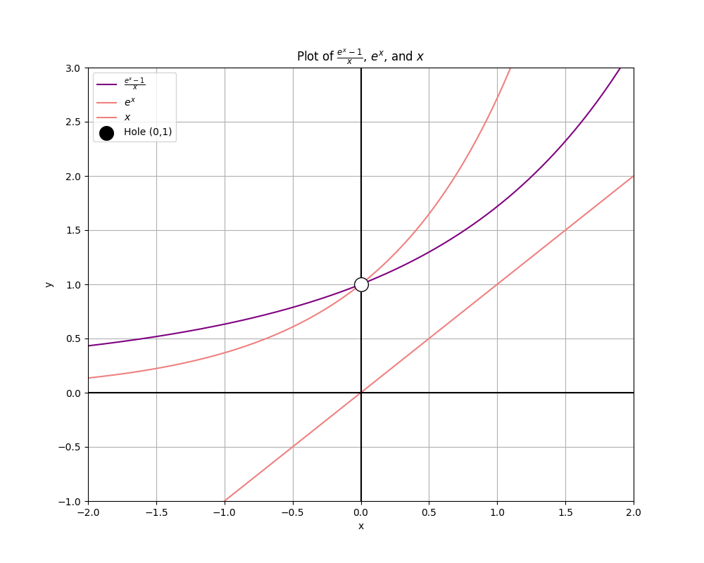

\( e^x \) is my favorite function from calculus, and I want to demonstrate to y'all exactly why!
The limit definition of the derivative function is:
\( f'(x) = \lim_{{h \to 0}} \frac{f(x+h) - f(x)}{h} \)
With \( f(x) = e^x \), we have:
\( f'(x) = \lim_{{h \to 0}} \frac{e^{x+h} - e^x}{h} \)
Using the exponent property that \( e^{a+b} = e^a \cdot e^b \), we can rewrite \( e^{x+h} \) as \( e^x \cdot e^h \):
\( f'(x) = \lim_{{h \to 0}} \frac{e^x \cdot e^h - e^x}{h} \)
If we factor out \( e^x \):
\( f'(x) = e^x \cdot \lim_{{h \to 0}} \frac{e^h - 1}{h} \)
Let's take a look at the definition of \( e \):
\( e = \lim_{{n \to \infty}} \left(1 + \frac{1}{n}\right)^n \)
To make this more usable for our purposes, we perform a substitution \( h = \frac{1}{n} \). Since \( n = \frac{1}{h} \),
\( e = \lim_{{n \to \infty}} \left(1 + h\right)^{\frac{1}{h}} \)
Since \( h \) tends to \( 0 \) as \( n \) tends to \(\infty\),
\( e = \lim_{{h \to 0}} \left(1 + h\right)^{\frac{1}{h}} \)
Now we're ready to substitute this into our original limit!
\( \lim_{{h \to 0}} \frac{e^h - 1}{h} = \lim_{{h \to 0}} \frac{\left(\left(1 + h\right)^{\frac{1}{h}}\right)^h - 1}{h} \)
Simplify:
\( \lim_{{h \to 0}} \frac{(1 + h) - 1}{h} = \lim_{{h \to 0}} \frac{h}{h} = 1 \)
We saw earlier that:
\( f'(x) = e^x \cdot \lim_{{h \to 0}} \frac{e^h - 1}{h} \)
And since \( \lim_{{h \to 0}} \frac{e^h - 1}{h} = 1 \), our final result is:
\( f'(x) = e^x \cdot 1 = e^x \)
This shows that the derivative of \( e^x \) is itself.